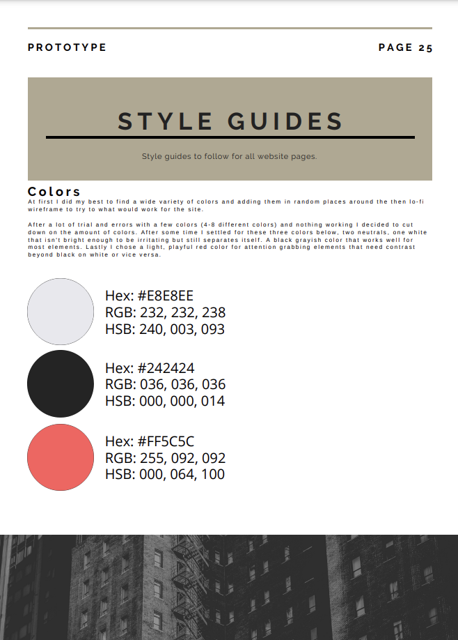
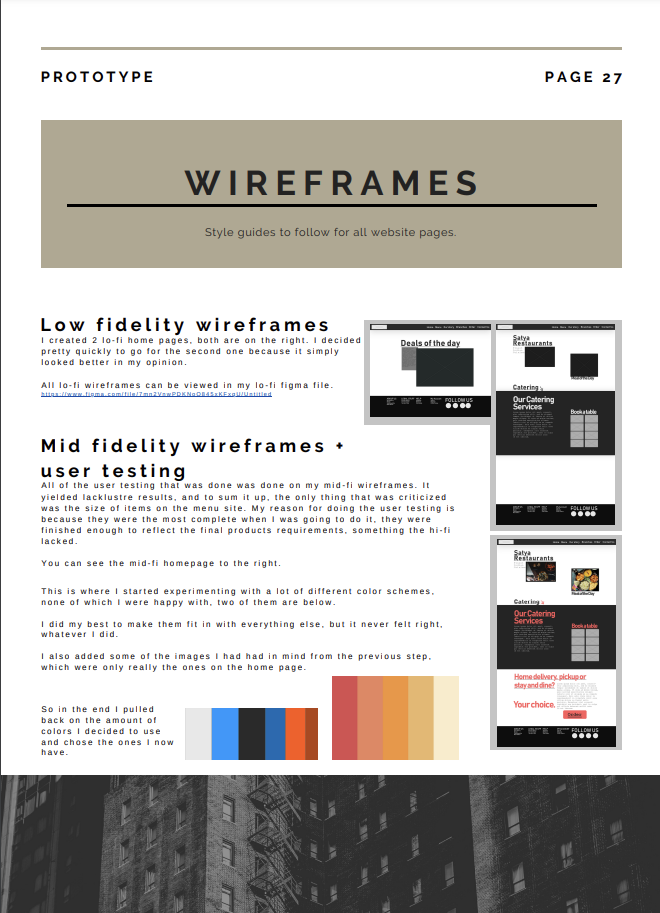
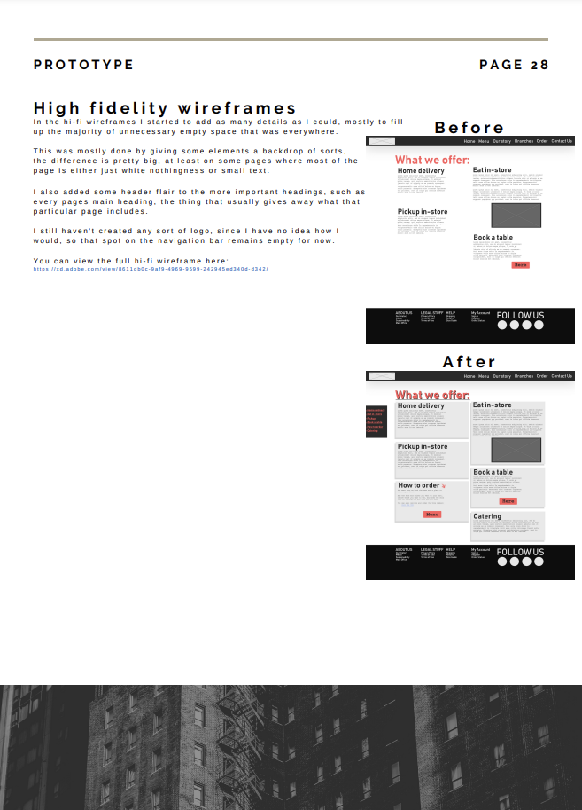

Redesign of Satya Restaurants, with pure HTML & CSS
Made by Lukas Skaane
Explanation
At the beginning of our education at Yoobee, I was tasked with finding a website that I could redesign. This is the one I chose. I used Adobe XD for creating wireframes & style guides.



I created user-personas, surveys and took user feedback on my sketches.
What I learnt
I learnt a LOT from this project. It was the first time I worked with HTML & CSS,
which was very different from any other language I'd used. I learnt about designing user interfaces,
how to create a good user experience and the general outline of how a website is designed and how to
realize this with code.
Difficulties
While I found the designing process fun and intuitive, actually transferring that into a website was very
difficult. I knew how I wanted things to look, but realizing this with HTML & CSS only was difficult.
The next time I create a website I hope I'll be able to use frameworks that help me with this.